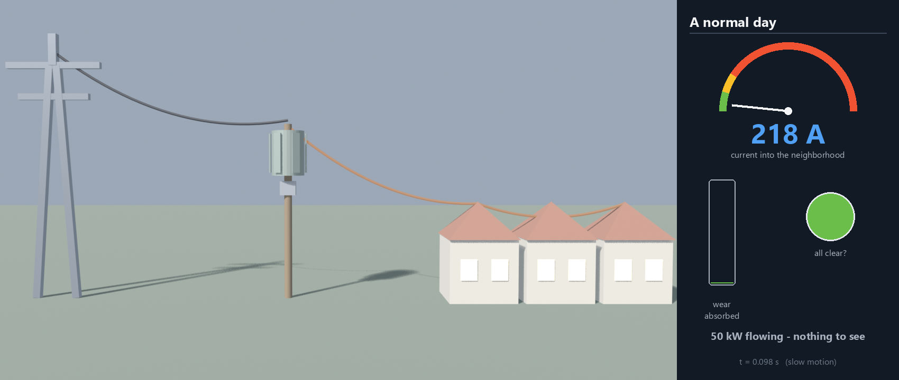
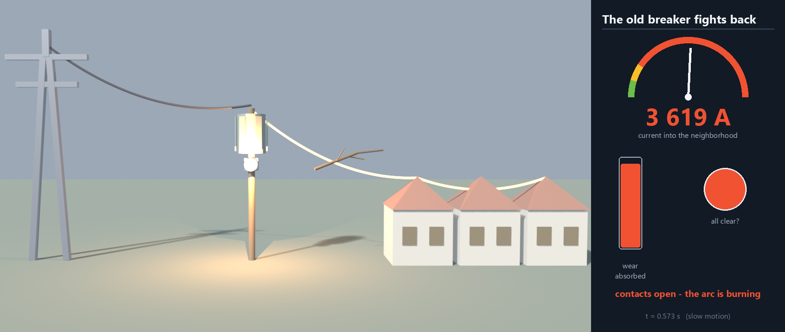
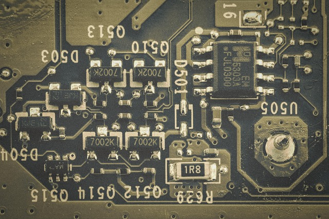
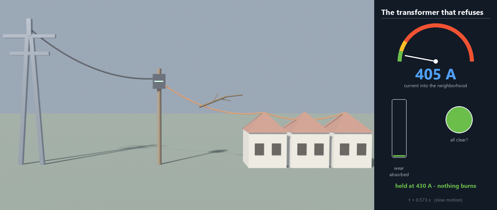

The transformer on your street is a 140-year-old design:
iron, copper and a tank of oil. The new solid state version is much lighter
and compact. Let's compare them using simulations.
Ankit Naik · Thinking in Systems · August 2026
· Download PDF
The 60-second version
If you read nothing else
The finding. I introduced a fault. With the old transformer and breaker, about 6 000 A ran for a tenth of a second before the fault cleared. With the solid state transformer the current never got past 430 A.
Why it matters. Almost all the damage a fault does, it does while you wait for the breaker. Cut the wait and there is not much damage left.
The mechanism. The old breaker is a machine. A relay decides, contacts swing apart, then an arc keeps conducting until the AC happens to cross zero. The electronic one just stops.
Do this. If your work touches data centers, EV charging or solar-heavy feeders, get familiar with this technology now. That is where it arrives first.
100×
Smaller magnetics: run the core at 20 kHz instead of 50 Hz
6 000 → 430 A
The same fault, old iron vs solid state
98%
Less fault wear absorbed by the equipment
So what
Once it is made of electronics, fault protection is a control decision.
Chapter 1
01 High voltage for the journey
Losses in a wire grow with the square of the current, so the
grid moves power at high voltage and steps it down near your house. The stepping is
the transformer's job.
Power plant
15 kV at the generator terminals
→
Transmission
220 kV, tiny current, cool wires
→
Feeder
11 kV through the neighborhood
→
Home
230 V at the wall socket
Ten times the voltage means one hundredth the loss in the same wire.
At 50 Hz each cycle is slow, so the iron core has to swallow a lot of magnetic flux per cycle. Core size scales as 1/frequency. Keep that in mind for chapter 3.
The losses come out as heat and the windings need insulation. A tank of mineral oil does both jobs, and it is also why these boxes can leak and burn.

Figure 1. A normal day in the model: 11 kV comes in, the
pole-top transformer delivers 230 V and 50 kW to the street, and the dial
sits at 218 A in the green. Nothing happens. That is what normal looks
like.Chapter 2
02 When the street shorts out
At t = 0.5 s a branch falls across the wires. From that
moment the only thing limiting the current is the cable itself, and it jumps from
217 A to about 6 000.
The relay notices within milliseconds. Then the machine takes over: 60 ms pass before the contacts even begin to part.
When they part the current does not stop. An electric arc keeps conducting between the contacts until the alternating current happens to cross zero.
All that time, heat and magnetic force are going into the transformer windings and the cable. The "wear" bar in the film integrates that punishment (∫i²dt) and fills for as long as the fault runs.

Figure 2. The contacts are open but the arc still carries the
full fault current. The dial reads 3 619 A—a smoothed average; the raw
peaks reach about 6 000 A—and the wear bar is filling. By the time the
arc dies the street is dark, and the equipment has taken its worst beating in
years.
The grid's reflexes are mechanical. Between the fault and the cure, the
transformer just has to survive.
Chapter 3
03 The transformer gets a brain
A solid state transformer does the same job with power electronics on
either side of a much smaller transformer. The size gain comes from speed.
AC → DC
Electronics rectify the incoming 11 kV
→
20 kHz link
A fist-sized transformer does the ratio and isolation
→
DC → AC
Clean 230 V out—or DC directly, if you want it
The 1/frequency rule from chapter 1 is where the 100× comes from: 20 kHz is 400× faster than 50 Hz, so the core shrinks by roughly two orders of magnitude.
There is no oil tank, so no fire risk and no containment basin. It can go indoors, on a pole or in a rack.
In an iron transformer the ratio is fixed by the windings. Here the ratio, the output voltage and the current limit live in control software and can change in microseconds.

Figure 3. Switching semiconductors and their gate drives now do
the work the iron used to do. (Photo: Pixabay.)Chapter 4
04 Same branch, same moment
I ran the chapter 2 fault again with the solid state transformer on
the pole. Same street, same branch, same instant. Its control loop caps the output at
430 A and it just sits there.
Protection
Peak current
Time at fault current
Fault wear absorbed
Old breaker (moving parts)
~6 000 A
~100 ms, arc included
100%
Solid state breaker
650 A, then cut
under 1 ms
~2%
Solid state transformer
430 A, held
never exceeds its limit
~7%, still serving

Figure 4. The same instant as Figure 2. The dial reads
405 A, the lamp is still green and the wear bar has barely moved. There is no
arc because nothing was interrupted.Chapter 5
05 The honest page
So why isn't this everywhere already? Five reasons, and they are all
real engineering.
Efficiency. A passive transformer is over 99% efficient, which is hard to beat. Three electronic conversion stages land at 96–98%, and at megawatt scale every lost percent is a heater somebody has to cool.
Cost. Iron and copper are cheap. Medium-voltage silicon carbide is not, and today an SST costs several times more per kVA.
Lifetime. Utilities expect 40+ years in the sun. Power electronics has proven closer to 15–20, and a semiconductor tolerates microseconds of overload where a tonne of copper and oil shrugs off seconds.
Cooling. The losses are smaller in percent but they now come out of a box 100× smaller. That needs heat sinks, fans, sometimes liquid, and each is one more thing that can fail.
Standards. A century of grid protection assumes big fault currents. A transformer that limits them can blind the legacy protection downstream, and certification moves slowly for good reasons.
Where it lands first
Wherever its extra functions pay for themselves: data centers taking DC straight
to the racks, EV fast-charging plazas, microgrids and solar-heavy feeders. Ordinary
street corners will be last.
The takeaway
The old grid survives faults. The new one refuses them.
For 140 years the transformer has been a passive machine protected by another
machine. Both are turning into electronics. What I take from the simulations: the
damage was never in the fault itself, it was in the tenth of a second the old
hardware needed to respond.
Judge protection by what gets through while it acts, not by whether it eventually acts.
Where downtime is expensive, fast and small wins over big and rugged.
Data centers and EV charging will make this normal long before your street corner sees it.
Every number in this note comes from one simulated neighborhood: an
11 kV feeder, a 50 kW street at 230 V and a bolted short circuit at
t = 0.5 s. Read the limits before you trust the conclusions.
Single-phase equivalents. The grid is three-phase; these models are single-phase story versions. The protection physics—relay delay, arc-to-zero-crossing, current limiting—carries over; exact amps would not.
Ideal transformers. No core saturation, no inrush, no losses. The mechanical breaker's arc uses the Modelica Standard Library arc model (arc voltage grows until a current zero quenches it).
The SST is an averaged model: an ideal ratio stage plus an electronic current limit. Its converter losses and voltage regulation are not modeled—the 430 A clamp is the one behavior under test.
Visual licence in the films: the physical arc in this run lasted about 1 ms (the contacts happened to part near a current zero) and is stretched to 120 ms on screen so the eye can see it. The dial shows a smoothed RMS current, not the raw 50 Hz waveform. Fault-window footage runs at 20× slow motion.
"Wear" is the engineering quantity ∫i²dt—the standard measure of the thermal and magnetic stress a fault imposes while protection acts.
How it was built
A self-contained Modelica library (grid chain, arcing breaker, solid state breaker, averaged SST, fault and wear meters), built and simulated in Wolfram System Modeler.
Every component carries a unit test; the fault scenarios are the library's example models.
Simulated trajectories exported and rendered headlessly in Blender; the data panel is drawn per frame from the same trajectories.